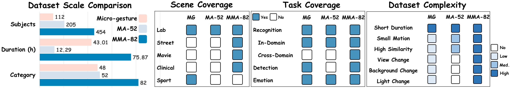
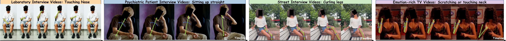
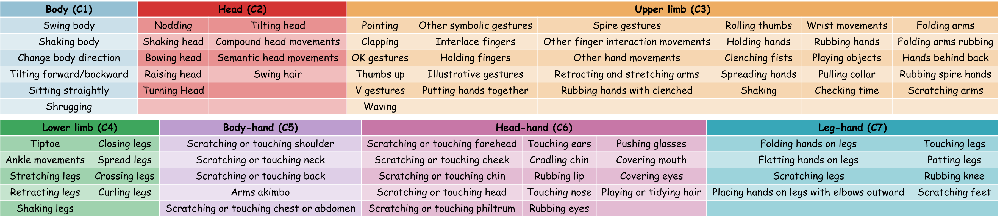
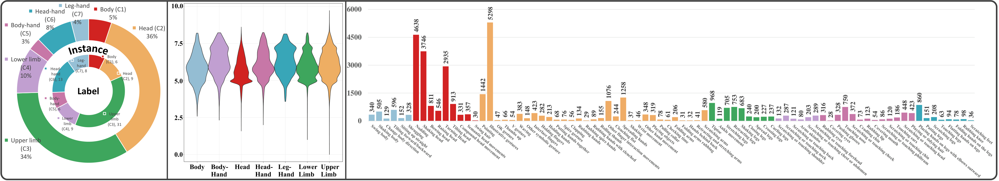
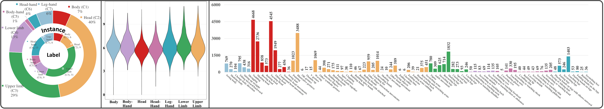
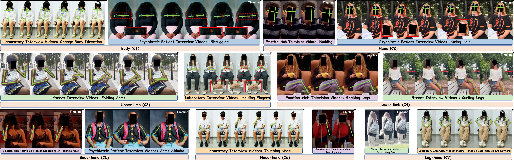
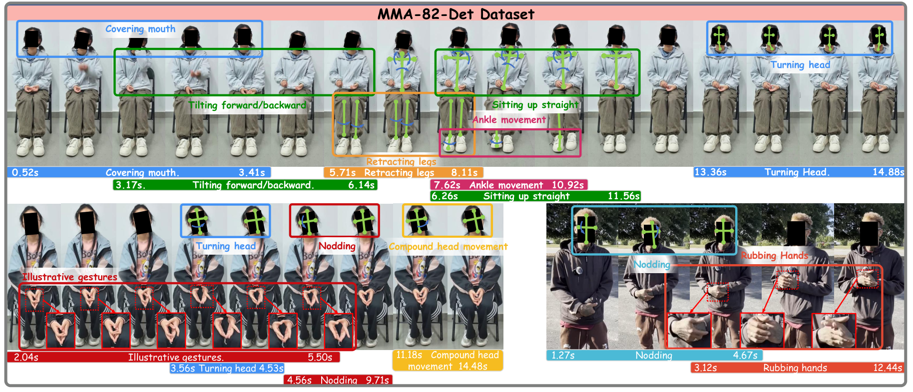
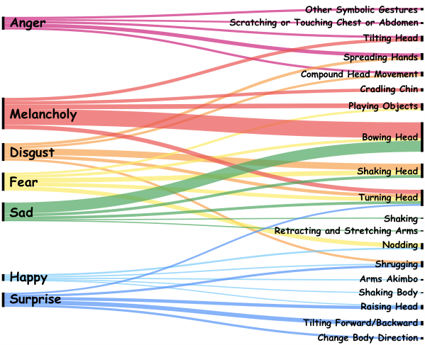
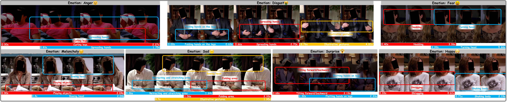

Laboratory Interview Videos
These videos were collected through a specialized face-to-face psychological interview protocol based on participants’ SCL-90 test results.
Abstract
Micro-actions are short-duration, low-amplitude subtle body movements at the whole-body level that can reveal latent intentions, involuntary reactions, and fine-grained affective changes. Our previous MA-52 benchmark has provided an important foundation for micro-action recognition, but it remains limited in scale, scene diversity, task coverage, and evaluation protocols.
To advance micro-action analysis toward more realistic and comprehensive settings, we introduce MMA-82, a large-scale multi-domain extension of MA-52. MMA-82 expands the label space from 52 to 82 fine-grained micro-action categories and covers four distinct domains, including laboratory interviews, street interviews, psychiatric patient interviews, and emotion-rich television videos, resulting in 77,856 annotated instances from 454 subjects.
Built upon MMA-82, we establish two core tasks: Micro-Action Recognition and Multi-label Micro-Action Detection. For recognition, we further define in-domain and cross-domain protocols, including few-shot and zero-shot settings, to evaluate model robustness, transferability, and generalization.
Extensive experiments show that current methods still struggle with realistic micro-action understanding, especially under domain shift, long-tailed category distributions, and complex temporal localization. Beyond benchmarking, we investigate the relationship between micro-actions and emotion, showing that micro-actions are strongly associated with emotional states and provide complementary cues to facial micro-expressions for improved emotion recognition.
These results demonstrate that MMA-82 serves as a comprehensive and challenging benchmark for realistic micro-action analysis and a valuable resource for human-centered AI. MMA-82 is available at https://github.com/LpyNow/MMA-82 .
Overview


MMA-82 improves scale, category richness, scene diversity, task coverage, and complexity compared with prior micro-gesture/action datasets.
Dataset
These videos were collected through a specialized face-to-face psychological interview protocol based on participants’ SCL-90 test results.
These videos is collected from publicly available psychiatric patient interview videos on YouTube.
These videos is mainly collected from unscripted street interview videos on YouTube, which are highly unstructured and recorded in open, uncontrolled environments.
These videos is derived from the CAER dataset, one of the most widely used benchmarks for emotion recognition.
MMA-82 combines recognition and detection annotations across four real-world domains.

The label space is organized into seven body-level groups: Body, Head, Upper Limb, Lower Limb, Body-Hand, Head-Hand, and Leg-Hand.


Tasks & Baselines
Given a trimmed video clip, models predict the target micro-action at body and action levels. MMA-82-Rec supports in-domain evaluation and cross-domain zero-shot / few-shot protocols.
Given an untrimmed video, models localize and classify every micro-action instance, including co-occurring or rapidly successive subtle movements.

Micro-action Recognition examples span all seven body-level groups and multiple source domains.

Micro-action Detection examples include multiple overlapping micro-action segments in untrimmed videos.
All values below are generated from the LaTeX source tables in tabs/*.tex.
| Sub-Dataset | Method | Action Level | Body Level | ||||||||||||||||||
|---|---|---|---|---|---|---|---|---|---|---|---|---|---|---|---|---|---|---|---|---|---|
| Top-1 Acc | Top-5 Acc | MCA | Macro F1 | Micro F1 | Top-1 Acc | Top-5 Acc | MCA | Macro F1 | Micro F1 | ||||||||||||
| Val | Test | Val | Test | Val | Test | Val | Test | Val | Test | Val | Test | Val | Test | Val | Test | Val | Test | Val | Test | ||
| MMA-82-Rec (All) | Skeleton | 54.43 | 56.62 | 80.44 | 80.45 | 36.26 | 36.77 | 37.35 | 39.39 | 54.43 | 56.62 | 79.04 | 81.93 | 99.18 | 99.11 | 69.62 | 71.71 | 71.12 | 74.62 | 79.04 | 81.93 |
| MMA-82-Rec (All) | RGB | 57.59 | 60.43 | 83.01 | 86.14 | 37.39 | 38.98 | 35.64 | 39.56 | 57.59 | 60.43 | 79.18 | 83.17 | 98.79 | 98.95 | 67.24 | 69.48 | 67.77 | 71.98 | 79.18 | 83.17 |
| Laboratory Interviews | Skeleton | 57.81 | 64.84 | 84.28 | 87.81 | 39.82 | 44.88 | 41.77 | 47.03 | 57.81 | 64.84 | 81.74 | 86.73 | 99.59 | 99.80 | 75.19 | 79.78 | 76.16 | 81.87 | 81.74 | 86.73 |
| Laboratory Interviews | RGB | 62.01 | 68.15 | 87.31 | 92.83 | 43.00 | 48.01 | 39.69 | 46.48 | 62.01 | 68.15 | 83.61 | 86.75 | 99.13 | 99.45 | 73.59 | 75.96 | 73.85 | 77.66 | 83.61 | 86.75 |
| Psychiatric Interviews | Skeleton | 50.64 | 41.63 | 75.46 | 68.79 | 27.33 | 15.74 | 24.93 | 17.65 | 50.64 | 41.63 | 76.97 | 77.73 | 98.71 | 99.01 | 57.29 | 47.46 | 52.54 | 51.33 | 76.97 | 77.73 |
| Psychiatric Interviews | RGB | 52.00 | 46.74 | 75.89 | 72.13 | 24.77 | 14.10 | 17.33 | 13.64 | 52.00 | 46.74 | 74.25 | 81.99 | 98.00 | 99.08 | 52.64 | 44.26 | 45.34 | 45.36 | 74.25 | 81.99 |
| Street Interviews | Skeleton | 44.82 | 40.77 | 68.18 | 70.71 | 19.55 | 19.49 | 21.20 | 20.70 | 44.82 | 40.77 | 69.95 | 71.35 | 97.60 | 98.84 | 45.44 | 43.39 | 49.09 | 49.52 | 69.95 | 71.35 |
| Street Interviews | RGB | 42.80 | 39.87 | 69.70 | 73.55 | 13.79 | 12.75 | 12.09 | 12.56 | 42.80 | 39.87 | 63.26 | 68.90 | 97.85 | 97.29 | 37.53 | 37.02 | 36.25 | 38.23 | 63.26 | 68.90 |
| Emotion Videos | Skeleton | 29.55 | 7.29 | 60.32 | 17.93 | 19.25 | 3.72 | 19.01 | 3.11 | 29.55 | 7.29 | 58.30 | 35.87 | 97.57 | 88.45 | 38.50 | 19.26 | 39.74 | 17.89 | 58.30 | 35.87 |
| Emotion Videos | RGB | 35.63 | 25.53 | 67.61 | 52.89 | 21.83 | 12.20 | 22.19 | 11.05 | 35.63 | 25.53 | 57.09 | 55.93 | 98.38 | 93.01 | 31.04 | 33.20 | 29.69 | 31.01 | 57.09 | 55.93 |
| Source | Task | Action Level | Body Level | ||||||||
|---|---|---|---|---|---|---|---|---|---|---|---|
| Top-1 Acc | Top-5 Acc | MCA | Macro F1 | Micro F1 | Top-1 Acc | Top-5 Acc | MCA | Macro F1 | Micro F1 | ||
| Psychiatric Interviews | Zero-Shot | 27.30 | 50.28 | 14.25 | 7.96 | 27.30 | 68.58 | 96.74 | 49.40 | 42.43 | 68.58 |
| Psychiatric Interviews | 1-Shot | 30.27 | 58.62 | 22.82 | 13.31 | 30.28 | 72.48 | 93.22 | 55.50 | 44.47 | 72.48 |
| Psychiatric Interviews | 5-Shot | 30.12 | 58.60 | 22.72 | 13.29 | 30.12 | 72.60 | 93.28 | 55.43 | 44.41 | 72.60 |
| Psychiatric Interviews | 10-Shot | 30.13 | 58.59 | 22.71 | 13.24 | 30.12 | 72.64 | 93.30 | 55.42 | 44.48 | 72.64 |
| Street Interviews | Zero-Shot | 20.65 | 44.90 | 10.65 | 6.91 | 20.65 | 53.16 | 92.65 | 38.68 | 35.12 | 53.16 |
| Street Interviews | 1-Shot | 21.38 | 45.64 | 15.60 | 12.40 | 21.38 | 54.95 | 84.46 | 38.92 | 37.27 | 54.95 |
| Street Interviews | 5-Shot | 21.58 | 46.10 | 16.17 | 13.28 | 21.58 | 64.91 | 95.61 | 40.33 | 17.00 | 64.91 |
| Street Interviews | 10-Shot | 22.52 | 45.92 | 17.76 | 14.23 | 22.52 | 65.64 | 97.22 | 39.37 | 38.91 | 65.64 |
| Emotion Videos | Zero-Shot | 14.13 | 32.98 | 6.63 | 4.18 | 14.13 | 43.92 | 90.43 | 25.18 | 23.77 | 43.92 |
| Emotion Videos | 1-Shot | 17.26 | 39.77 | 14.00 | 11.62 | 17.26 | 41.43 | 79.84 | 27.11 | 25.13 | 41.43 |
| Emotion Videos | 5-Shot | 17.48 | 41.75 | 15.20 | 12.10 | 17.49 | 42.35 | 90.80 | 26.93 | 24.56 | 42.35 |
| Emotion Videos | 10-Shot | 17.70 | 42.53 | 15.43 | 12.26 | 17.70 | 42.03 | 92.30 | 26.95 | 24.39 | 42.03 |
| Backbone | Action-Level | Body-Level | AVG | ||||||
|---|---|---|---|---|---|---|---|---|---|
| @0.2 | @0.5 | @0.7 | Avg | @0.2 | @0.5 | @0.7 | Avg | ||
| VideoMAE-S | 20.88 | 12.72 | 5.56 | 12.09 | 48.18 | 28.78 | 13.91 | 25.44 | 18.77 |
| VideoMAE-B | 22.62 | 14.67 | 6.32 | 13.59 | 50.95 | 30.46 | 12.23 | 29.13 | 21.36 |
| VideoMAE-L | 22.74 | 15.60 | 7.68 | 14.98 | 55.48 | 33.01 | 14.06 | 31.83 | 23.41 |
| VideoMAE-H | 26.53 | 17.56 | 7.55 | 16.08 | 54.71 | 33.64 | 14.17 | 30.05 | 23.07 |
| Task | Method | Top-1 Acc | F1 |
|---|---|---|---|
| Micro-Expression Only | DeepFace | 22.86 | 17.54 |
| Micro-Action Only | TSM | 32.38 | 31.86 |
| Both | DeepFace + TSM | 32.86 | 32.36 |
| No. | Experiment | Acc | Delta | F1 |
|---|---|---|---|---|
| 1 | Base Results | 0.271 | 0 | 0.277 |
| 2 | No Top-5 MAs only | 0.186 | -0.086 | 0.147 |
| 3 | Top-5 MAs only | 0.379 | +0.107 | 0.350 |
Emotion Analysis

Decision-tree analysis reveals emotion-specific micro-action patterns, while related emotions share overlapping body cues.
| Micro-expression only | 22.86 Top-1 · 17.54 F1 |
|---|---|
| Micro-action only | 32.38 Top-1 · 31.86 F1 |
| Both | 32.86 Top-1 · 32.36 F1 |

Emotion-rich television examples illustrate how annotated micro-actions connect subtle movements with affective states.
Paper
@misc{hao2026newmultidomainbenchmarkmicroaction,
title={A New Multi-Domain Benchmark for Micro-Action Recognition and Detection},
author={Hao, Yanbin and Liu, Pengyu and Wei, Xing and Yang, Xun and Guo, Dan and Wang, Meng},
year={2026},
eprint={2606.14096},
archivePrefix={arXiv},
primaryClass={cs.CV},
url={https://arxiv.org/abs/2606.14096}
}